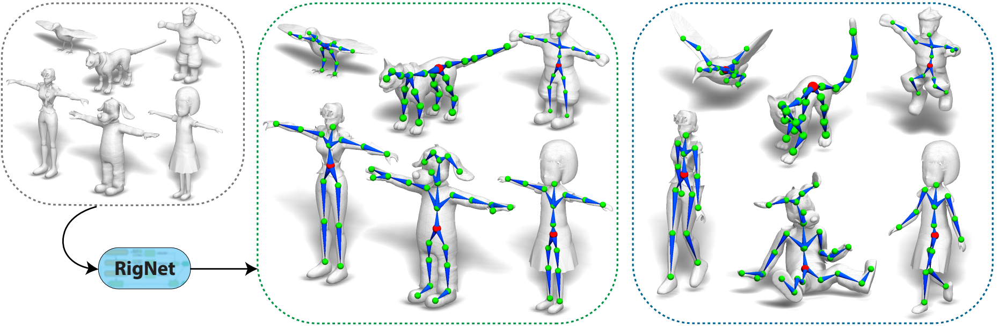

RigNet: Neural Rigging for Articulated Characters
SIGGRAPH 2020

Abstract
We present RigNet, an end-to-end automated method for producing animation rigs from input character models. Given an input 3D model representing an articulated character, RigNet predicts a skeleton that matches the animator expectations in joint placement and topology. It also estimates surface skin weights based on the predicted skeleton. Our method is based on a deep architecture that directly operates on the mesh representation without making assumptions on shape class and structure. The architecture is trained on a large and diverse collection of rigged models, including their mesh, skeletons and corresponding skin weights. Our evaluation is three-fold: we show better results than prior art when quantitatively compared to animator rigs; qualitatively we show that our rigs can be expressively posed and animated at multiple levels of detail; and fnally, we evaluate the impact of various algorithm choices on our output rigs.
Paper
RigNet.pdf, 11.6MBVideo
Source Code & Data
Github code: https://github.com/zhan-xu/RigNet
Dataset: ModelsResource-RigNetv1
Citation
If you use our dataset or code, please cite the following papers.
@InProceedings{AnimSkelVolNet,
title={Predicting Animation Skeletons for 3D Articulated Models via Volumetric Nets},
author={Zhan Xu and Yang Zhou and Evangelos Kalogerakis and Karan Singh},
booktitle={2019 International Conference on 3D Vision (3DV)},
year={2019}
}
@article{RigNet,
title={RigNet: Neural Rigging for Articulated Characters},
author={Zhan Xu and Yang Zhou and Evangelos Kalogerakis and Chris Landreth and Karan Singh},
journal={ACM Trans. on Graphics},
year={2020},
volume={39}
}
Acknowledgements
This research is partially funded by NSF (EAGER-1942069) and NSERC. Our experiments were performed in the UMass GPU cluster obtained under the Collaborative Fund managed by the Massachusetts Technology Collaborative.